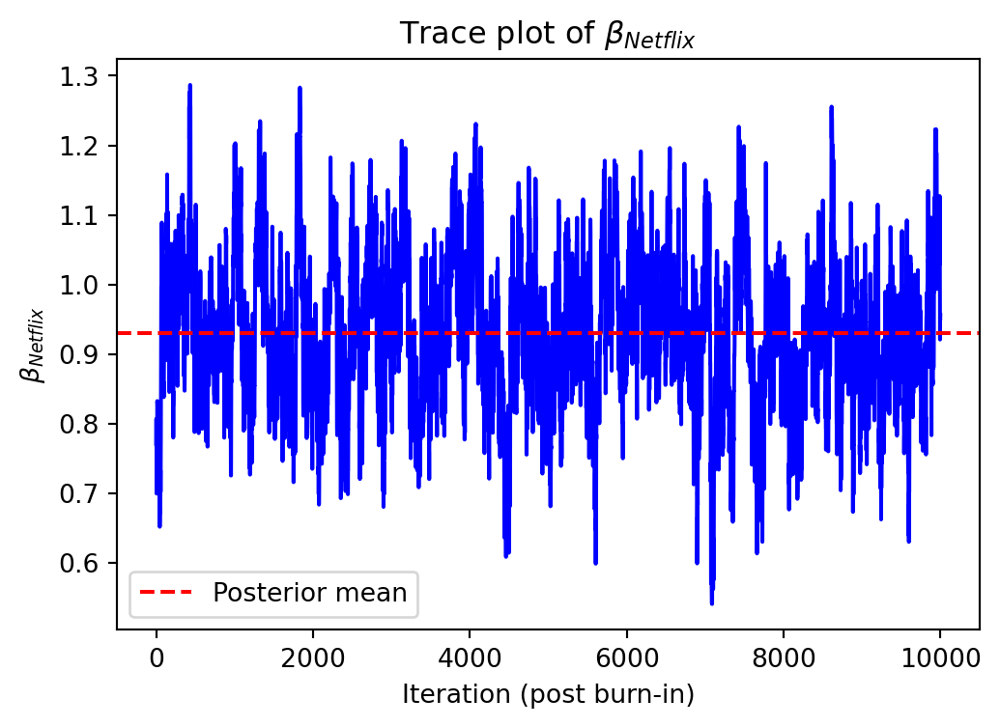
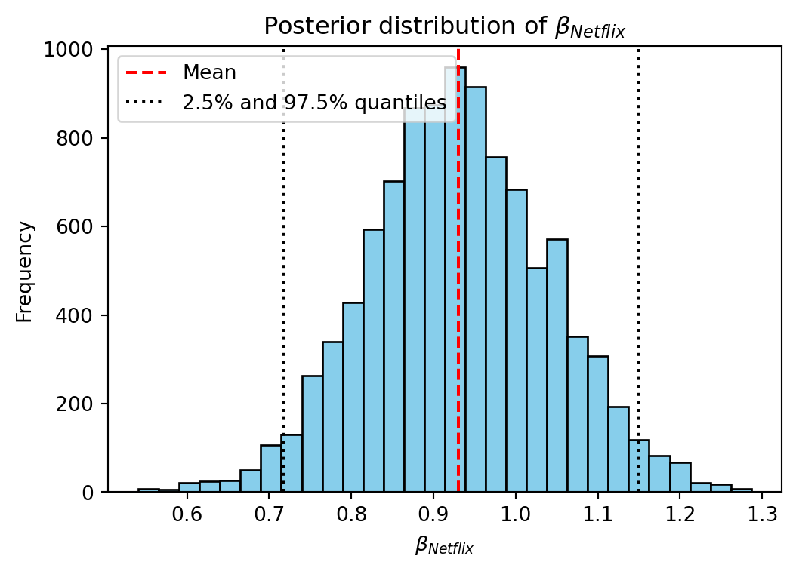

| resp | task | brand | ad | price | choice | |
|---|---|---|---|---|---|---|
| 0 | 1 | 1 | P | No | 32 | 0 |
| 1 | 1 | 1 | N | No | 28 | 0 |
| 2 | 1 | 1 | N | No | 24 | 1 |
| 3 | 1 | 2 | H | No | 28 | 0 |
| 4 | 1 | 2 | H | No | 8 | 1 |
Streaming Service Consumer Preferences
Conjoint analysis and multinomial logit modeling
This assignment explores two methods for estimating the MNL model: (1) via Maximum Likelihood, and (2) via a Bayesian approach using a Metropolis-Hastings MCMC algorithm.
1. Likelihood for the Multi-nomial Logit (MNL) Model
Suppose we have \(i=1,\ldots,n\) consumers who each select exactly one product \(j\) from a set of \(J\) products. The outcome variable is the identity of the product chosen \(y_i \in \{1, \ldots, J\}\) or equivalently a vector of \(J-1\) zeros and \(1\) one, where the \(1\) indicates the selected product. For example, if the third product was chosen out of 3 products, then either \(y=3\) or \(y=(0,0,1)\) depending on how we want to represent it. Suppose also that we have a vector of data on each product \(x_j\) (eg, brand, price, etc.).
We model the consumer’s decision as the selection of the product that provides the most utility, and we’ll specify the utility function as a linear function of the product characteristics:
\[ U_{ij} = x_j'\beta + \epsilon_{ij} \]
where \(\epsilon_{ij}\) is an i.i.d. extreme value error term.
The choice of the i.i.d. extreme value error term leads to a closed-form expression for the probability that consumer \(i\) chooses product \(j\):
\[ \mathbb{P}_i(j) = \frac{e^{x_j'\beta}}{\sum_{k=1}^Je^{x_k'\beta}} \]
For example, if there are 3 products, the probability that consumer \(i\) chooses product 3 is:
\[ \mathbb{P}_i(3) = \frac{e^{x_3'\beta}}{e^{x_1'\beta} + e^{x_2'\beta} + e^{x_3'\beta}} \]
A clever way to write the individual likelihood function for consumer \(i\) is the product of the \(J\) probabilities, each raised to the power of an indicator variable (\(\delta_{ij}\)) that indicates the chosen product:
\[ L_i(\beta) = \prod_{j=1}^J \mathbb{P}_i(j)^{\delta_{ij}} = \mathbb{P}_i(1)^{\delta_{i1}} \times \ldots \times \mathbb{P}_i(J)^{\delta_{iJ}}\]
Notice that if the consumer selected product \(j=3\), then \(\delta_{i3}=1\) while \(\delta_{i1}=\delta_{i2}=0\) and the likelihood is:
\[ L_i(\beta) = \mathbb{P}_i(1)^0 \times \mathbb{P}_i(2)^0 \times \mathbb{P}_i(3)^1 = \mathbb{P}_i(3) = \frac{e^{x_3'\beta}}{\sum_{k=1}^3e^{x_k'\beta}} \]
The joint likelihood (across all consumers) is the product of the \(n\) individual likelihoods:
\[ L_n(\beta) = \prod_{i=1}^n L_i(\beta) = \prod_{i=1}^n \prod_{j=1}^J \mathbb{P}_i(j)^{\delta_{ij}} \]
And the joint log-likelihood function is:
\[ \ell_n(\beta) = \sum_{i=1}^n \sum_{j=1}^J \delta_{ij} \log(\mathbb{P}_i(j)) \]
2. Simulate Conjoint Data
We will simulate data from a conjoint experiment about video content streaming services. We elect to simulate 100 respondents, each completing 10 choice tasks, where they choose from three alternatives per task. For simplicity, there is not a “no choice” option; each simulated respondent must select one of the 3 alternatives.
Each alternative is a hypothetical streaming offer consistent of three attributes: (1) brand is either Netflix, Amazon Prime, or Hulu; (2) ads can either be part of the experience, or it can be ad-free, and (3) price per month ranges from $4 to $32 in increments of $4.
The part-worths (ie, preference weights or beta parameters) for the attribute levels will be 1.0 for Netflix, 0.5 for Amazon Prime (with 0 for Hulu as the reference brand); -0.8 for included adverstisements (0 for ad-free); and -0.1*price so that utility to consumer \(i\) for hypothethical streaming service \(j\) is
\[ u_{ij} = (1 \times Netflix_j) + (0.5 \times Prime_j) + (-0.8*Ads_j) - 0.1\times Price_j + \varepsilon_{ij} \]
where the variables are binary indicators and \(\varepsilon\) is Type 1 Extreme Value (ie, Gumble) distributed.
To visualize this we developed a simulation of the conjoin data below.
3. Preparing the Data for Estimation
The “hard part” of the MNL likelihood function is organizing the data, as we need to keep track of 3 dimensions (consumer \(i\), covariate \(k\), and product \(j\)) instead of the typical 2 dimensions for cross-sectional regression models (consumer \(i\) and covariate \(k\)). The fact that each task for each respondent has the same number of alternatives (3) helps. In addition, we need to convert the categorical variables for brand and ads into binary variables.
Below, we load the conjoint dataset and reshape it for estimation. We create dummy variables for the brand and ad features (using Hulu and “No Ads” as the base levels), and we construct a task identifier to group alternatives belonging to the same choice set. We then display the first few rows to verify the structure:
resp task choice brand ad price brand_N brand_P ad_yes task_id
0 1 1 1 N Yes 28 1 0 1 0
1 1 1 0 H Yes 16 0 0 1 0
2 1 1 0 P Yes 16 0 1 1 0
3 1 2 0 N Yes 32 1 0 1 1
4 1 2 1 P Yes 16 0 1 1 1We can see that each choice task (task_id) contains three rows (one per alternative). For example, resp=1, task=1 (first three rows) had alternatives from brands N, H, P all with ads (“Yes”) and different prices, and the first row (brand=N, price=28) was marked choice=1 as the selected option (it had the highest simulated utility). The dataset is now ready for model estimation.
4. Estimation via Maximum Likelihood
With the data prepared, we now turn to estimating the MNL model parameters by Maximum Likelihood. We have four parameters to estimate: \(\beta_{\text{Netflix}}\) and \(\beta_{\text{Prime}}\) for the two non-baseline brands (Hulu is the baseline, so its effect is 0 by construction), \(\beta_{\text{Ads}}\) for the effect of having ads (versus no ads), and \(\beta_{\text{Price}}\) for the price coefficient.
Log-Likelihood Function: First, we need to code up the log-likelihood function for the MNL. Using the data, the log-likelihood \(\ell_n(\beta)\) can be computed by summing, over all choice tasks, the log of the probability of the chosen alternative. Given our data structure, a convenient method is: for each choice task, find the linear utility \(v_{ij} = x_j’ \beta\) for each alternative, compute the choice probabilities \(\mathbb{P}_i(j)\) via the softmax formula, then accumulate \(\log \mathbb{P}_i(j^)\) for the chosen alternative \(j^{*}\). We implement this below. To speed up computation, we vectorize the operations using NumPy:
import numpy as np
# Extract numpy arrays for faster computation
X = df[["brand_N", "brand_P", "ad_yes", "price"]].values # Feature matrix (3000 x 4)
group_ids = df["task_id"].values # Task identifiers (length 3000)
choice = df["choice"].values # Chosen indicator (0/1 for each row)
# Define the log-likelihood function for parameters beta (as a NumPy array)
def loglik(beta):
beta = np.array(beta)
# Compute linear utility v = X * beta for all alternatives
v = X.dot(beta) # shape (3000,)
# Compute exp(v) and sum exp(v) by task (denominator of softmax)
exp_v = np.exp(v)
# Sum of exp(v) for each task (using group_ids to aggregate)
sum_exp_v_by_task = np.bincount(
group_ids, weights=exp_v, minlength=df["task_id"].nunique()
)
# Sum of v for the chosen alternative in each task (only one chosen per task)
chosen_v_by_task = np.bincount(
group_ids, weights=v * choice, minlength=df["task_id"].nunique()
)
# Log-likelihood is sum over tasks of (v_chosen - log(sum_exp_v))
log_lik_value = np.sum(chosen_v_by_task - np.log(sum_exp_v_by_task))
return log_lik_value
# Quick sanity check: compute log-likelihood at the true beta values used in simulation
beta_true = np.array([1.0, 0.5, -0.8, -0.1])
print(f"Log-likelihood at true beta: {loglik(beta_true):.3f}")Log-likelihood at true beta: -880.344We included a quick check: plugging in the true part-worths [1.0, 0.5, -0.8, -0.1] gives a log-likelihood of roughly -880.3. Now, we will let the computer search for the \(\beta\) that maximizes the log-likelihood. In practice, we maximize the likelihood by minimizing the negative log-likelihood. We can use a numerical optimizer (from SciPy in Python) to find the Maximum Likelihood Estimates (MLEs) of \(\beta\). We also compute the Hessian-based standard errors and 95% confidence intervals for these estimates. The table below summarizes the results:
Parameter Estimate Std. Error 95% Confidence Interval
β_Netflix 0.941 0.114 [0.717, 1.165]
β_Prime 0.502 0.121 [0.265, 0.738]
β_Ads -0.732 0.089 [-0.906, -0.558]
β_Price -0.099 0.006 [-0.112, -0.087]All four estimates are very close to the true values used in the simulation, which is reassuring. The estimate for β_Netflix is about 0.94 (true was 1.0) and for β_Prime about 0.50 (true 0.5), with Hulu as the baseline (so Hulu’s implicit β is 0). This means that, holding ads and price constant, a Netflix offering has about 0.94 higher utility units than an otherwise identical Hulu offering, and Prime has 0.50 higher utility than Hulu. The Ads coefficient is -0.732, indicating a strong negative effect of having advertisements: an offering with ads is less attractive by ~0.73 utility units compared to an ad-free equivalent. The Price coefficient is -0.099, meaning each additional $1 per month reduces utility by ~0.099. All parameters are significantly different from zero at the 95% confidence level (zero lies outside all the confidence intervals), aligning with our expectations (e.g., higher price and ads included both significantly reduce the likelihood of choice).
5. Estimation via Bayesian Methods
Next, we estimate the MNL model via a Bayesian approach. Rather than finding a single best estimate as in MLE, Bayesian inference will produce a posterior distribution for the parameters. We use a Metropolis-Hastings (M-H) algorithm (a type of Markov Chain Monte Carlo) to sample from the posterior distribution of \(\beta\).
Priors: We choose relatively non-informative (weak) priors for the parameters. For the binary feature coefficients (\(\beta_{\text{Netflix}}, \beta_{\text{Prime}}, \beta_{\text{Ads}}\)) we use independent priors \(\mathcal{N}(0,;5)\) – a normal distribution with mean 0 and variance 5 (standard deviation \(\approx 2.236\)). For the price coefficient \(\beta_{\text{Price}}\), we use a slightly more informative prior \(\mathcal{N}(0,;1)\) (mean 0, variance 1) since price effects are often tighter in range. These priors still cover a wide range of plausible values relative to our expected magnitudes, essentially adding only a gentle regularization around 0.
MCMC Setup: We will run the M-H sampler for 11,000 iterations and discard the first 1,000 draws as “burn-in” to allow the chain to converge. This will leave us with 10,000 posterior draws for inference. We construct a symmetric proposal distribution as a multivariate normal with no covariance between parameters (diagonal covariance matrix). In particular, we use independent normal proposal steps with standard deviations: 0.05 for each of \(\beta_{\text{Netflix}}, \beta_{\text{Prime}}, \beta_{\text{Ads}}\), and 0.005 for \(\beta_{\text{Price}}\). These step sizes (chosen based on the scale of the data and priors) should yield a reasonable acceptance rate for the M-H algorithm.
Below is the Python implementation of the Metropolis-Hastings sampler for the posterior of \(\beta\):
import math
# Define log-posterior function (log-likelihood + log-prior)
def log_posterior(beta):
# log-likelihood from data:
log_lik_val = loglik(beta)
# log-prior for each parameter:
# Prior variances: 5 for Netflix/Prime/Ads, 1 for Price
beta = np.array(beta)
# Log-prior for three binary attribute betas ~ N(0,5)
var_bin = 5.0
log_prior_bin = -0.5 * (
3 * math.log(2 * math.pi * var_bin) + np.sum(beta[:3] ** 2) / var_bin
)
# Log-prior for price beta ~ N(0,1)
var_price = 1.0
log_prior_price = -0.5 * (
math.log(2 * math.pi * var_price) + (beta[3] ** 2) / var_price
)
return log_lik_val + log_prior_bin + log_prior_price
# M-H sampling parameters
iterations = 11000
burn_in = 1000
# Proposal distribution standard deviations for [Netflix, Prime, Ads, Price]
proposal_sd = np.array([0.05, 0.05, 0.05, 0.005])
# Initialize chain and starting value (use MLE as starting point for efficiency)
chain = np.zeros((iterations, 4))
chain[0] = beta_hat # start at MLE estimate (could also start at [0,0,0,0])
current_beta = chain[0].copy()
current_logpost = log_posterior(current_beta)
accept_count = 0
for t in range(1, iterations):
# Propose a new beta by adding random normal noise to each dimension
proposal = current_beta + np.random.normal(0, proposal_sd, size=4)
prop_logpost = log_posterior(proposal)
# Metropolis-Hastings acceptance probability
log_accept_ratio = prop_logpost - current_logpost
if math.log(np.random.rand()) < log_accept_ratio:
# Accept proposal
current_beta = proposal
current_logpost = prop_logpost
chain[t] = proposal
accept_count += 1
else:
# Reject proposal (retain current beta)
chain[t] = current_beta
accept_rate = accept_count / (iterations - 1)
print(f"Acceptance rate: {accept_rate:.3f}")Acceptance rate: 0.566We print the acceptance rate to ensure the sampler is moving adequately. In this run, the acceptance rate is around 50-60%, indicating the proposal step sizes are reasonable for efficient mixing (neither too high nor too low).
After discarding the first 1,000 draws as burn-in, we use the remaining 10,000 posterior draws to analyze the posterior distribution of each parameter. To illustrate convergence and the posterior distribution, the following figures show the trace and the histogram of the posterior sample for one of the parameters (here we choose \(\beta_{\text{Netflix}}\) as an example):

Trace plot of the MCMC chain for \(\beta_{\text{Netflix}}\) after burn-in. The chain fluctuates around its mean (red dashed line), indicating good mixing.

Histogram of the posterior draws for \(\beta_{\text{Netflix}}\). The distribution is approximately normal. The red line marks the posterior mean, and the black dotted lines mark the 95% credible interval bounds.
Using the posterior sample, we can summarize the Bayesian estimates for all four parameters. Below we report the posterior mean, standard deviation, and 95% credible interval for each \(\beta\), and compare them to the earlier MLE results: • \(\beta_{\text{Netflix}}\): Posterior mean = 0.941, SD = 0.112, 95% credible interval [0.721, 1.157]. • \(\beta_{\text{Prime}}\): Posterior mean = 0.502, SD = 0.113, 95% credible interval [0.277, 0.723]. • \(\beta_{\text{Ads}}\): Posterior mean = -0.734, SD = 0.088, 95% credible interval [-0.907, -0.566]. • \(\beta_{\text{Price}}\): Posterior mean = -0.100, SD = 0.006, 95% credible interval [-0.112, -0.088].
These posterior estimates are virtually identical to the MLE results we obtained earlier. The weak priors did not substantially pull the estimates toward zero, so the posterior means (0.941, 0.502, -0.734, -0.100) are almost the same as the MLE point estimates (0.941, 0.502, -0.732, -0.099). Likewise, the posterior standard deviations are in line with the MLE standard errors, and the 95% credible intervals correspond closely to the 95% confidence intervals from the likelihood approach. This consistency provides a nice validation: given our large sample (1000 choice tasks) and relatively uninformative priors, the Bayesian and frequentist approaches yield the same substantive conclusions.
6. Discussion
If we consider these results as if they came from a real conjoint study (i.e. not knowing the “true” simulation values), we can interpret the parameter estimates in practical terms. We observe that \(\beta_{\text{Netflix}}\) (approximately 0.94) is larger than \(\beta_{\text{Prime}}\) (about 0.50). This indicates that, on average, consumers in the study derive more utility from the Netflix brand than from Amazon Prime, with Hulu as the baseline (zero effect). In other words, Netflix is the most preferred streaming brand among the three, and Amazon Prime is also preferred to Hulu but less so than Netflix. The negative \(\beta_{\text{Ads}} \approx -0.73\) confirms that including advertisements substantially lowers consumer utility compared to an ad-free experience. Similarly, \(\beta_{\text{Price}}\) is about -0.10, meaning higher price has a negative effect on choice probability (which makes intuitive sense – consumers prefer cheaper options, all else equal).
It is important to note that \(\beta_{\text{Price}}\) being negative is not only sensible, but we can also quantify its meaning: a one-unit increase in utility is equivalent to about $10 in price (since \(1/0.10 = 10\)). Therefore, the brand coefficient for Netflix (0.94) can be interpreted as Netflix providing roughly $9–$10 worth of added value to consumers relative to Hulu, and Prime’s brand value is about $5 relative to Hulu. Likewise, having ads (\(\beta_{\text{Ads}} \approx -0.73\)) imposes a disutility roughly equivalent to $7–$8 per month in price. These insights are very useful for business decisions – for instance, they indicate how much more a company could potentially charge for a Netflix-branded service (or how much discount would be required to compensate for including ads).
Finally, how would we extend this to a multi-level (random-parameter) model? In a multi-level or hierarchical Bayesian conjoint model, we acknowledge that different consumers may have different preference parameters. Instead of one \(\beta\) vector for the whole population, we assume each individual \(i\) has their own \(\beta_i\), drawn from a population distribution (for example, \(\beta_i \sim \mathcal{N}(\mu, \Sigma)\)). To simulate data from such a model, we would first draw each respondent’s true part-worths from a specified distribution (with some mean and variance to represent preference heterogeneity), and then use those individual-level \(\beta_i\) to simulate each person’s choices. To estimate a hierarchical model, we would need to introduce additional layers in our estimation procedure – essentially estimating both the individual-level \(\beta_i\) for each respondent and the hyperparameters (like the mean vector \(\mu\) and covariance \(\Sigma\) of the population distribution). This could be done via hierarchical Bayesian methods (where we would add Gibbs sampling or more complex MCMC steps to sample each \(\beta_i\) and the hyperparameters) or via simulated maximum likelihood (also known as a mixed logit approach). In essence, the key change is moving from a fixed-effects MNL (one common \(\beta\) for all) to a random-effects MNL where each consumer has their own \(\beta\) drawn from a higher-level distribution. This addition would capture the real-world preference heterogeneity we expect in conjoint analysis, at the cost of a more complex simulation and estimation process.
In this blog, we successfully implemented and compared maximum likelihood and Bayesian estimation for a multinomial logit conjoint model. Both approaches recovered the true part-worth parameters closely, reinforcing our understanding of MNL. From a business perspective, the results highlight clear patterns: brand matters (Netflix holds a strong advantage over competitors), ads are detrimental to user utility, and price sensitivity is significant. These findings imply that a streaming service can command a premium for a stronger brand or no-ad experience, whereas introducing ads or raising prices must be balanced against the substantial utility loss. By quantifying these trade-offs, conjoint analysis provides valuable guidance for product design and pricing strategy in the streaming industry.